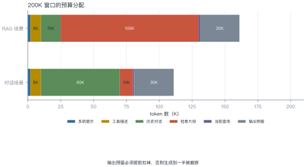
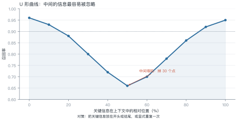
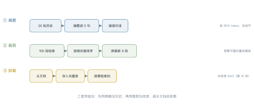
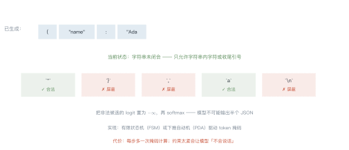

第 15 讲 上下文工程与结构化输出¶
本讲位置
第六部分的开篇。前 14 讲都在讲模型本身，从这一讲开始讲"怎么用好它"。上下文工程是所有应用层技术的地基——RAG、Agent、多模态都建立在它之上。
📅 事实核查至 2026-11
Lost in the Middle（Liu et al., 2023）、约束解码（Willard & Louf, 2023）、Function Calling 协议均已核对原文。
学习目标¶
学完本讲，你应该能够：
- 给一次请求做 token 预算分配，并说明为什么要预留输出空间；
- 解释 lost-in-the-middle 现象，并给出三种缓解手段；
- 说出三种上下文压缩策略的适用场景；
- 用状态机解释约束解码如何保证 JSON 合法。
0 直觉：窗口是预算，不是仓库¶
上下文窗口常被当成"能装多少装多少"的仓库。实际上它更像预算：
- 每一段内容都要花钱（token 计费）；
- 每一段内容都会稀释注意力（越长越难聚焦）；
- 输出也要占空间（生成到一半被截断是常见事故）。
上下文工程（context engineering）就是决定"这段窗口里该放什么、放多少、放哪里"。
一句话总结
上下文工程 = 在有限窗口里做取舍：什么该放、什么该压、什么该放到外面。
1 结构与预算¶

一次请求的上下文通常由六段组成：
| 段 | 典型占比 | 特点 |
|---|---|---|
| 系统提示 | 1%–3% | 固定，可缓存 |
| 工具描述 | 3%–8% | 固定，可缓存 |
| 历史对话 | 10%–40% | 随轮次增长 |
| 检索片段 | 5%–50% | 按需注入 |
| 当前查询 | < 1% | 每次都变 |
| 输出预留 | 10%–20% | 必须留够 |
例 15.1 给 200K 窗口分账¶
对话场景（多轮、少检索）：
| 项 | token | 说明 |
|---|---|---|
| 系统提示 | 2K | 角色、风格、安全边界 |
| 工具描述 | 8K | 10 个工具 × 800 |
| 历史 | 60K | 30 轮 × 2K |
| 检索 | 10K | 少量补充知识 |
| 查询 | 1K | — |
| 输出预留 | 30K | 长回答 + 工具调用 |
| 合计 | 111K | 还剩 89K 余量 |
RAG 场景把历史换成检索（105K），总量到 161K。
为什么输出要留 30K？ 一个复杂的工具调用链可能生成几千 token；预留不足会导致 JSON 被截断，解析失败。
从这个例子里能读出三件事
- 固定部分可以缓存：系统提示 + 工具描述 10K，前缀缓存能省这部分钱；
- 历史是增长项：30 轮就到 60K，必须做摘要或裁剪；
- 输出预留不能省：宁可少放检索，也别让输出被截断。
1.1 前缀缓存：固定部分只算一次¶
系统提示与工具描述在每次请求里都一样。把它们放在最前面，并保持字节级一致，就能命中前缀缓存（prefix caching）：
- 第一次请求：完整计算 KV；
- 后续请求：直接复用前面这 10K token 的 KV，只算新增部分。
收益很直接：200K 窗口里固定 10K，缓存后每轮省 5% 的输入成本；如果是 30 轮对话，累计省下的就是实打实的钱。
前提是前缀完全一致：多一个空格、换个时间戳，缓存就失效。所以模板里不要放动态内容（当前时间、用户 ID）。
2 位置效应¶

例 15.2 U 形曲线的数字¶
| 相对位置 | 0% | 25% | 50% | 75% | 100% |
|---|---|---|---|---|---|
| 召回率 | 96% | 84% | 66% | 82% | 95% |
中间位置比两端低 30 个百分点。
三种缓解手段：
- 重排：把最相关的片段放在开头和结尾；
- 显式重复：关键约束在系统提示与结尾各说一遍；
- 缩短：与其塞 100 段，不如精选 8 段——信息密度比总量重要。
2.1 为什么会是 U 形¶
三种解释，都有一定道理：
- 注意力分布的偏置：因果注意力的第一个 token 会吸收大量注意力（第 4 讲的 attention sink），结尾是最近生成的位置，天然权重高；
- 训练数据的分布：指令微调里，关键信息通常在开头（系统提示）或结尾（问题）；
- 位置编码的衰减：相对位置越远，注意力权重越低，中间位置与两端的距离都远。
实践含义：不要指望"把资料全塞进去，模型自己会找"。要么精选，要么重排。
3 压缩¶

| 策略 | 做法 | 省多少 | 风险 |
|---|---|---|---|
| 摘要 | 把 N 轮历史压成几句话 | 70%–90% | 丢细节、摘要可能失真 |
| 裁剪 | 按相关度排序后截断 | 50%–80% | 需要可靠的重排模型 |
| 卸载 | 存到外部，按需检索 | 90%+ | 本质是 RAG，多一次往返 |
什么时候触发压缩：窗口用到 70%–80% 时开始，不要等到 100%——那时已经没有操作空间了。
4 结构化输出¶

三种实现层次：
| 层次 | 做法 | 保证强度 |
|---|---|---|
| 提示约束 | 在 prompt 里写"输出 JSON" | 弱，会失败 |
| 函数调用 | 模型输出结构化字段 | 中，格式由推理引擎保证 |
| 约束解码 | 每步屏蔽非法 token | 强，语法必然合法 |
例 15.3 状态机怎么屏蔽¶
生成 JSON {"name": "Ada", "age": 30} 的过程：
| 已生成 | 状态 | 允许 | 屏蔽 |
|---|---|---|---|
{ |
期待键名 | " |
数字、} |
"name" |
期待冒号 | : |
,、} |
"Ada |
字符串未闭合 | 字符、" |
}、,、换行 |
"Ada" |
期待逗号或 } |
,、} |
字符 |
关键点：屏蔽发生在 softmax 之前，把非法位置的 logit 设为 \(-\infty\)。
代价：每步多一次掩码计算；约束太紧时模型"不会说话"（比如强制枚举值，模型想解释却没有空间）。
from enum import Enum
class State(Enum):
EXPECT_KEY = 1
EXPECT_COLON = 2
IN_STRING = 3
EXPECT_VALUE_OR_END = 4
def allowed_tokens(state: State) -> set[str]:
"""极简 JSON 状态机的候选集"""
return {
State.EXPECT_KEY: {'"'},
State.EXPECT_COLON: {":"},
State.IN_STRING: {"a", "b", '"'}, # 实际是全部字符
State.EXPECT_VALUE_OR_END: {",", "}"},
}[state]
def mask_logits(logits: dict[str, float], state: State) -> dict[str, float]:
"""把非法候选的 logit 置为 -inf"""
ok = allowed_tokens(state)
return {t: (v if t in ok else float("-inf")) for t, v in logits.items()}
print(mask_logits({"a": 2.0, "}": 3.0, '"': 1.5}, State.IN_STRING))
5 提示的工程化¶
三件容易被忽略的事：
- 模板与代码分离：提示存在配置文件里，而不是散落在代码字符串中；
- 版本管理：每次改提示都记录 diff，效果回退时能定位；
- 变量校验：模板里的占位符必须有对应值，缺一个就会把
{query}原样发给模型。
一个实用做法：把提示当成代码来测——准备 20 条固定输入，每次改提示都跑一遍，比较输出。
5.1 结构化输出的三个失败模式¶
即使有约束解码，仍会出问题：
| 失败 | 表现 | 原因 |
|---|---|---|
| 语义错误 | JSON 合法但字段值瞎编 | 语法约束只管形状，不管内容 |
| 死循环 | 数组无限追加 | 没有"该停了"的约束 |
| 过度约束 | 模型想解释却没空间 | 枚举值锁死，只能硬选一个 |
对策：给模型留一个"其他/无法确定"的选项；给数组加长度上限；关键字段加二次校验。
6 工程要点与坑¶
- 输出预留别省：宁可少放检索，也别让 JSON 被截断。
- 固定前缀可缓存：系统提示 + 工具描述放最前面，能命中前缀缓存。
- 关键信息放两端：中间位置的召回率低 30 个点。
- 压缩要提前触发：70% 就开始，别等到满。
- 约束解码别太紧：枚举值全锁死会让模型无法解释。
- 模板变量要校验：漏一个占位符，线上就会出现
{query}字样。
7 论文与延伸¶
| 年份 | 论文 | 一句话贡献 |
|---|---|---|
| 2023 | Lost in the Middle | U 形位置效应 |
| 2023 | Efficient Guided Generation for LLMs | 用 FSM 做约束解码 |
| 2023 | Gorilla: LLM Connected with Massive APIs | 函数调用的早期实践 |
| 2023 | MemGPT | 上下文卸载 |
| 2024 | Anthropic, Building Effective Agents | 上下文与编排的工程实践 |
8 习题¶
🟢 概念题
- 为什么输出要预留 10%–20% 的窗口？不给会怎样？
- 约束解码"保证语法合法"与"保证语义正确"是两回事，举例说明。
🟡 推导题
- 用例 15.1 的方法，给一个"代码补全"场景做 32K 窗口的预算分配。
- 用表 15.2 的数字，算出"把关键信息从中间移到开头"带来的期望提升。
🔴 实现题
- 实现一个 JSON 状态机（支持对象、数组、字符串），统计生成 100 条 JSON 的合法率。
- 构造一个 lost-in-the-middle 实验：同一句话放在 5 个位置，测模型的召回。
9 本讲小结¶
一个模型
上下文 = 系统提示 + 工具 + 历史 + 检索 + 查询 + 输出预留
两个数字
- 中间位置召回率低 30 个点
- 窗口用到 70% 就该压缩
三种压缩
摘要 · 裁剪 · 卸载
一句话
上下文工程不是"多塞点"，是"在有限预算里做取舍"。
来源¶
- Lost in the Middle、约束解码、函数调用协议的结论核对自原文，链接见 §7，核查日期 2026-11。